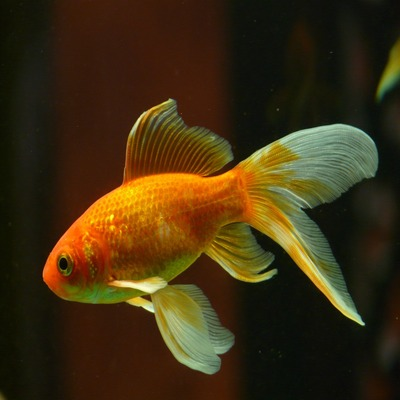
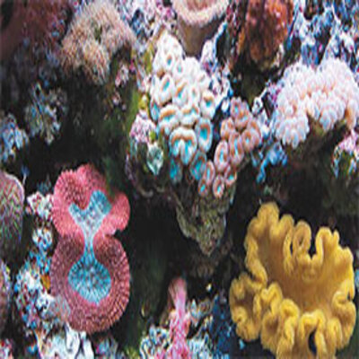

Pelayanan
IKAN DAN AQUARIUM

Pemeliharaan Aquarium
Bergantung pada berapa banyak ikan yang Anda miliki, dan seberapa berantakannya mereka, sebagian besar akuarium perlu dibersihkan setiap dua minggu sekali.

Tanaman Aquarium
Tanaman tidak hanya terlihat bagus di akuarium ikan, tetapi juga memberikan banyak manfaat luar biasa lainnya. Mereka bertindak sebagai penyaringan yang hebat, menyediakan air dengan oksigen.

Kesehatan & Nutrisi Ikan
Nutrisi makanan sangat penting untuk pembangunan jaringan hidup. Mereka juga merupakan sumber energi yang tersimpan untuk pencernaan ikan, penyerapan, pertumbuhan, reproduksi, dan proses kehidupan lainnya.

Kualitas Air Aquarium
7.0 dianggap netral. Kebanyakan ikan tropis akuarium air tawar melakukan yang terbaik pada pH 6,8 hingga 7,8, meskipun ikan tertentu mungkin memerlukan tingkat yang lebih tinggi atau lebih rendah.